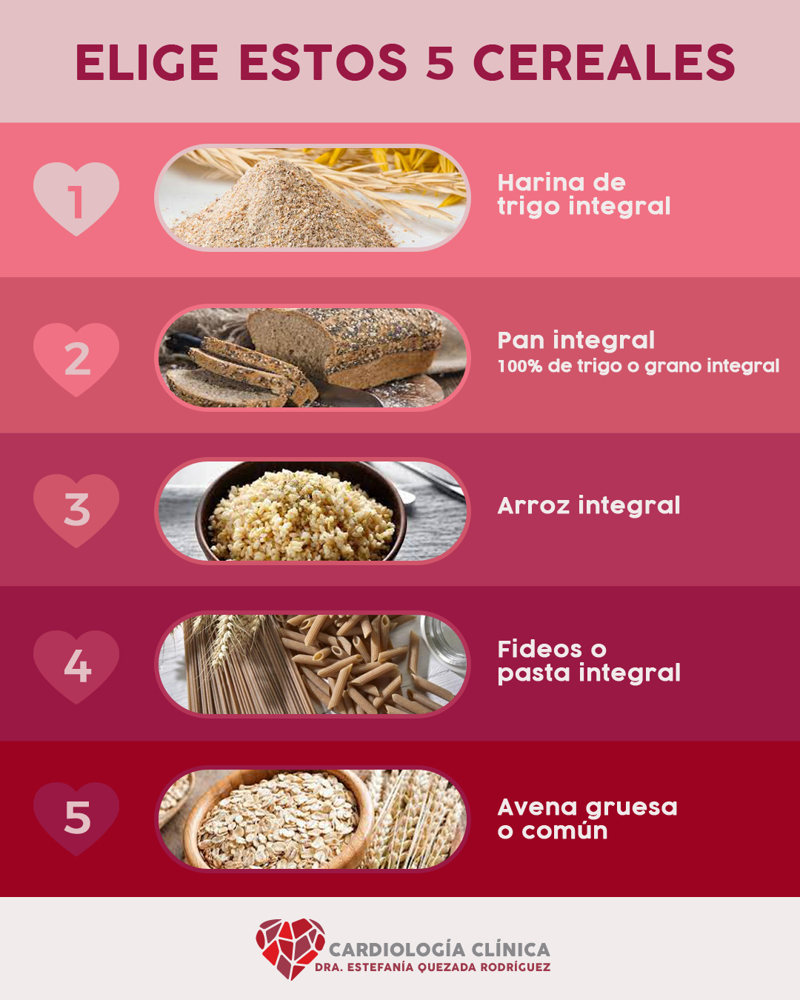

Social Media Collection
During my years of freelancing I had to reinvented myself and really learned the meaning of multitasking. Since the majority of my projects were Social Media I involved in the all process that was behind a design to post. Sometimes, I did copywriting, content management, community management and design.
The advantage was that I immersed myself in the entire creative process and experimented with new ways of giving a message in this digital era. Here's a compilation of my favorite social media interactions.
Mini Cooper
Patria Guadalajara and Baja California

KIA
Gonzalez Gallo Guadalajara

Nephrologist Mariano


Cardiologist Estefania Quezada




Software
Photoshop, Illustrator, Premiere
Marketing and Content Management for KIANelly Sanchez and Karla Campos
Marketing and Content Management for Mini CooperNelly Sanchez